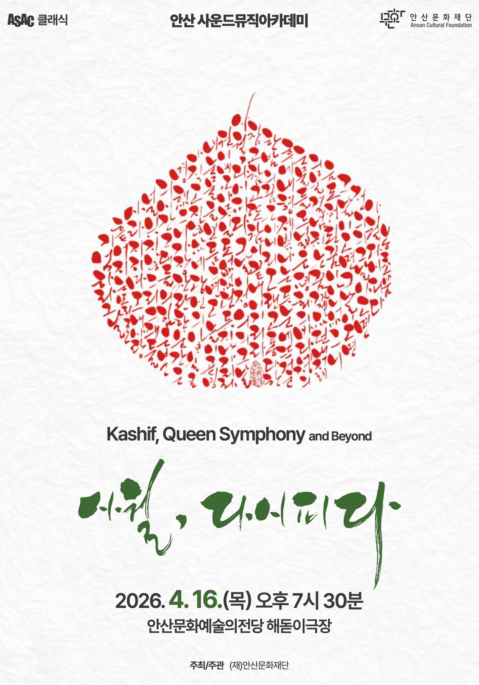

| 프롤로그 | 슬픔의 날Pieśni żałosnych | 구레츠키, 심포니 3번 "슬픈 노래" 3악장 M.Sop. 김선정 |
| 1부 | 기억하라 그날Recordare dies illa | 카쉬프, 퀸 심포니 1악장 |
| 2부 | 영원한 빛Lux aeterna | 카쉬프, 퀸 심포니 3악장 Vn. 정하나 ｜ Vc. 박건우 |
| 3부 | 1장 눈물의 날, 지나가리Lacrimosa, dies illa2장 정의의 날, 곧 오리라Dies irae, dies illa3장 그날이 오리니Misericordia, dies illa4장 이겨내리라Libera me de morte | 카쉬프, 퀸 심포니 5악장 |
| 4부 | 1장 평화의 날, 다시 피어나리Dona nobis pacem2장 한 바람으로 남아In paradisum, vita aeterna | 카쉬프, 퀸 심포니 6악장 |
| 에필로그 | 사랑이 내게 말하는 것 — 그날이 오면Was mir die Liebe erzählt — 그날이 오면 | 말러, 심포니 3번 6악장 피날레 문승현, '그날이 오면' |
여기서 가까운 곳에 아우슈비츠 수용소가 있다. 나는 어릴 적부터 이곳에 흩어져 있는 게슈타포 수용소를 보며 자랐다. 수용소에 갇힌 어린 소녀가 벽에 새긴 글을 보라. 우는 어머니를 달래면서 성모 마리아에게 자신들을 버리지 말라고 기도하고 있다. 또한 자식을 잃은 어머니의 통절한 슬픔이 서려 있다. 이들의 눈물이 바로 슬픔의 강이다. '슬픔의 날'은 슬픔의 강이 흐르는 소리라 할 수 있다.
흐르는 강을 자를 수 있다면 당신의 말이 옳다. 하지만 강은 끊임없이 흐른다. 흐르지 않는 것은 이미 강이 아니기 때문이다. 과거로부터 흘러나오는 이 강은 현재를 넘어 미래로 흘러 들어가고 있다. 보스니아 내전의 비극을 보라. 죽고 죽이는 아비규환을 인종의 문제라 생각하는가? 천만에, 그것은 욕망의 비계 덩어리로 숨 쉬고 있는 인간의 문제다. 과거의 슬픔은 곧 현재와 미래의 슬픔이다. 다만, 그 슬픔의 형태가 다를 뿐이다.
예술가란, 살아남은 자의 형벌을 가장 민감히 느끼는 사람이다. 살아있다는 것은 축복이기도 하지만, 동시에 형벌이기도 하다. 빛은 어둠이 있어야 존재한다. 축복과 형벌은 이 빛과 어둠의 관계다. 그런데, 예술가는 축복보다 형벌에 민감한 사람이다. 그리고 그 형벌을 견뎌내야 한다. 단언컨대, 견디지 못하는 자는 예술가가 아니다. 슬픔의 강은 사람과 사람 사이에서 끊임없이 흐르고 있지만, 그 강이 있는지조차 모르는 사람들이 많다. 이 강이 있음을 일깨우는 사람이 바로 예술가다.
예술가는 어둠 속에서 빛을 찾는 사람이다. 그런데, 그 빛은 슬픔의 강 너머에 있다.
이제 내가 당신들한테 질문하고 싶다. 슬픔의 강은 어떻게 건너는가?
톨가 카쉬프의 「퀸 심포니(Queen Symphony)」는 퀸의 음악을 교향적 구조로 재창조한 작품으로, 대중음악과 고전음악이 각 문법의 충돌이 아니라 어법의 나눔으로 만날 수 있음을 보여준다.
카쉬프는 퀸의 음악을 오케스트라의 문법으로 옮기기 위해 원곡의 리듬·화성·선율을 기계적으로 확대하지 않았다. 또한 일반 메들리처럼 단순히 곡을 모아 시간순으로 편곡한 것이 아니라, 서사적 전개를 기준으로 곡들을 재배열하고, 서로 다른 노래들을 하나의 유기적 흐름 속에 결속했다. 예를 들어 'Radio Ga Ga'의 멜로디를 레퀴엠 전례문 '기억하소서 (Recordare)'의 모티프로 치환하는 식으로, 퀸의 핵심 주제와 정서를 추출해 새로운 서사로 교향곡이자 극음악으로 직조했다.
퀸 심포니는 구조적으로 레퀴엠 서사이지만, 관통하는 정서는 애도와 절망이 아니라 기억과 소망이다. 오케스트라는 특유의 소리 밀도로 기억을 되짚으며 서사를 이어간다. 합창단은 그 서사에 따라 아들이 되기도 하고, 엄마가 되기도 하고, 보편인간으로서 유연하게 부응하거나 역동적으로 대응하기도 하면서 지금 여기 부재하는 자와 존재하는 자를 아울러 보듬는다.
원곡의 정체성을 훼손하지 않으면서도 관현악만이 구현할 수 있는 음향의 깊이로 새로운 서사를 써낸 이 곡은 '훌륭한 음악이란 무엇인가'라는 오래된 물음에 대한 두가지 대답이다.
이 에필로그는 말러가 작곡한 '사랑이 내게 말하는 것'과 문승현이 작곡한 '그날이 오면'의 멜로디 시작 부분이 구조적, 선율적으로 매우 유사하다는 점에 착안하여 만들어졌다. 하지만 더 깊은 유사성은 정서의 맥락에 있다. '오랜 기다림'과 '꿈'이다.
세상에서 가장 긴 교향곡이라고 불리는 교향곡 3번을 쓴 말러는 여섯 악장에 각각 이름을 'X가 내게 말하는 것'이라고 붙였었다. 1악장부터 차례로 자연, 꽃, 동물, 인간, 천사, 사랑 순이다. 이 교향곡에선 6악장 전까지 물리적 시간이 약 1시간 20분이나 흘러간다. 그리고나서야 드디어 '사랑'이 내게 말을 건넨다.
우리는 마지막에 이 '사랑'이 아무런 가사도 없이 내게 말하는 것을 듣고 숭고한 감정으로 가슴이 터질 듯하다. '사랑이 내게 말하는 것'은 단순한 아름다운 멜로디와 근사한 화성의 조합이 아니라 긴 시간을 견디고 참아온 자에게 말러가 주는 숭고한 선물이다.
인간이 최초에 '진짜가 아님'을 경험한 것은 무엇일까. 아마도 첫 '꿈'을 꾸고 깨어난 이후였을 것이다. 자신이 꾼 꿈을 '가짜'라고 부른 이후에야, 현실을 '진짜'라고 부를 수 있게 된 셈이다.
그런데 꿈은 가짜였지만, 현실이 고통스러울수록 그 말은 점점 변해갔다. 환상이란 뜻을 품더니, 나아가서 희망이란 뜻을 품고, 결국 이상이란 뜻이 되어버렸다. 문승현의 '그날이 오면'은 이 진짜와 가짜 꿈을 확신하며 구분한다.
한밤의 꿈은 아니리
오랜 고통 다 한 후에
내 형제 빛나는 두 눈에
뜨거운 눈물들
한줄기 강물로 흘러,
고된 땀방울 함께 흘러
드넓은 평화의 바다에
정의의 물결 넘치는 꿈
그래서 다시 피는 4월 오늘, 우리는 1연을 거꾸로 하나하나 되짚어 가며 말러의 멜로디에 얹어 천천히 노래한다.
한 꿈을 꾼다.
그 꿈은 정의의 물결이 넘치는 꿈이다.
그 물결은 드넓은 평화의 바다에서 넘실거린다.
그 평화의 바다는 한줄기 강물로 흘러와 이루어졌다.
그 강물은 고된 땀방울과 뜨거운 눈물들로 만들어졌다.
그 눈물은 오랜 고통 받은 내 형제의 두 눈에서 나왔다.
그런데 고통에 지쳤음에도 그 두 눈은 찬란히 빛난다.
이것이 그저 한밤에 잠자다가 꾸는 헛된 가짜 꿈인가.
아니, 이것은 내 젊음을 다 바쳐 꿈꾸는 진짜 꿈이다.
'정의'의 그날이 오면,
그리워할 수 밖에 없는 아픈 추억도,
또한 나의 짧았던 젊음도
헛된 꿈이 아니었으리!
말러의 꿈, 오랜 기다림의 끝은 '사랑'이 내게 말하는 것이었다. 문승현의 꿈, 오랜 기다림의 끝의 그날은 '정의'의 물결이 넘치는 날이다. 버티며 견디는 시간에 한밤의 꿈은 아득할지 몰라도, 오랜 기다림으로 맞이하는 사랑이 내게 말하는 것은 결코 헛된 꿈이 아니다.
사랑은 나에게, 정의의 날을 꿈꾸라고 말한다.
2026 ASAC 클래식 〈안산 사운드뮤직아카데미〉의 첫 번째 무대로 봄 음악회 〈사월, 다시 피다〉를 선보이게 되어 진심으로 기쁩니다.
공연이 열리는 4월 16일은 안산이라는 도시에 각별한 의미를 지닌 날입니다. 오늘 공연장을 가득 채울 선율이 여러분의 마음속에 오래도록 따뜻하게 남기를 바랍니다.
안산문화재단은 지휘자 구자범의 손끝을 통해, 퀸의 음악이 품은 감정과 서사가 오늘을 살아가는 우리에게 어떻게 '이 시대의 레퀴엠'으로 닿을 수 있는지를 함께 나누고자 합니다. 익숙한 선율 속에 새롭게 깃든 의미와 시선을 통해, 음악만이 건넬 수 있는 치유의 힘을 느껴보시기를 바랍니다.
이번 무대를 위해 특별히 결성된 80인의 '봄 프로젝트오케스트라'와 100여 명의 '봄 프로젝트콰이어'가 하나의 목소리로 공연장을 가득 채웁니다.
〈사월, 다시 피다〉의 자리에 함께해 주신 모든 분께 깊이 감사드립니다. 봄날의 선율이 여러분의 마음을 따스하게 어루만지는 소중한 시간이 되기를 진심으로 소망합니다.